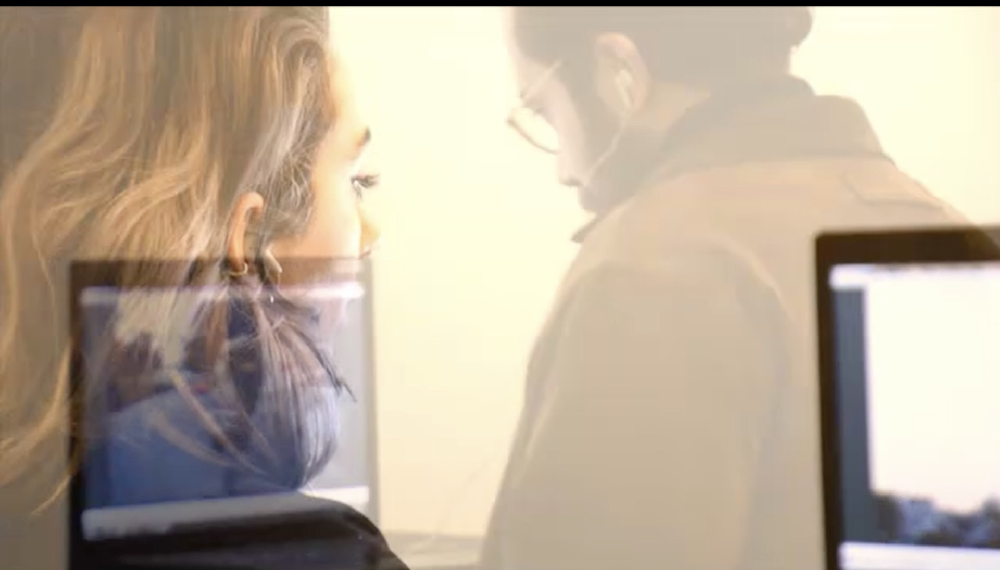
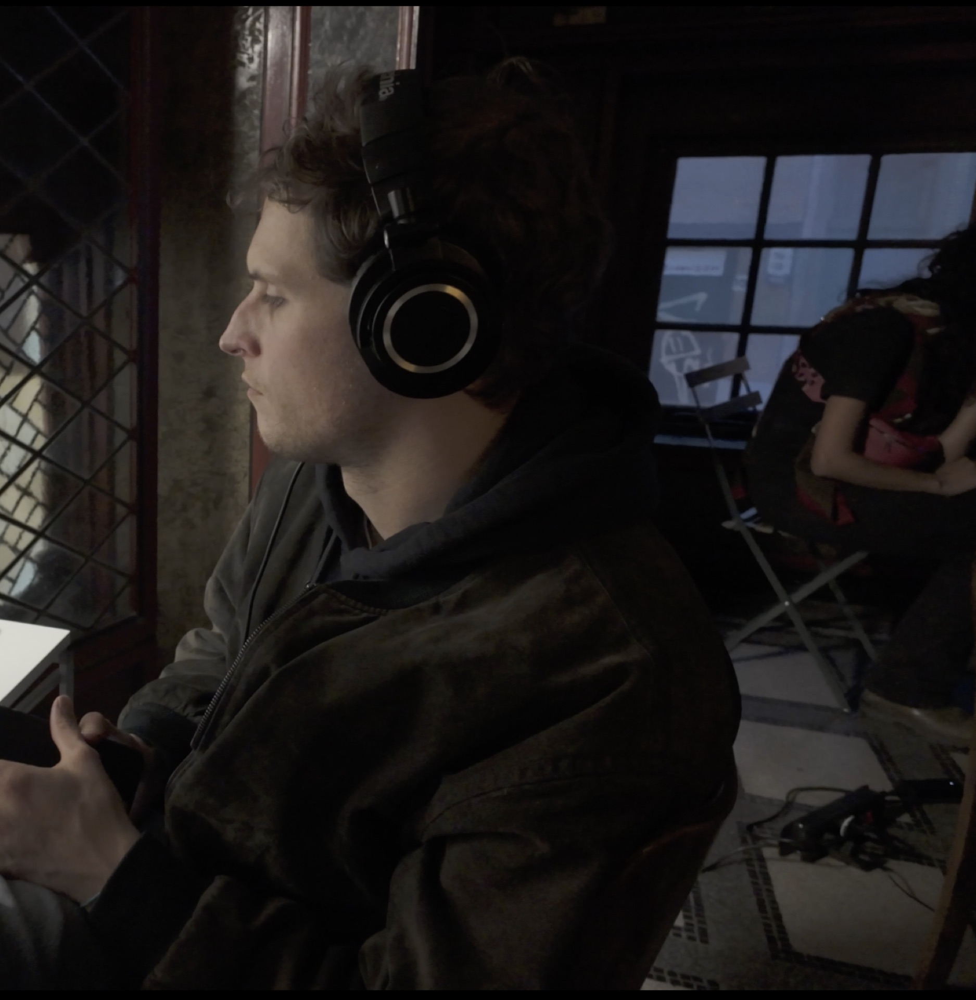
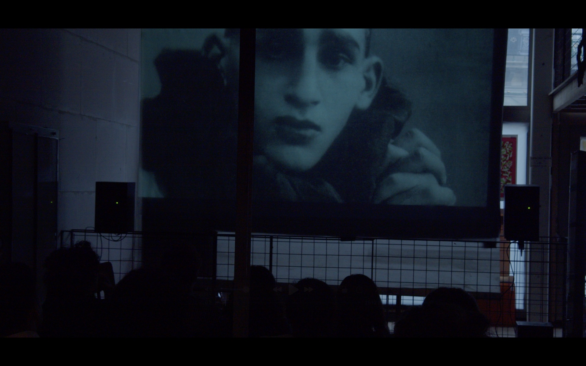
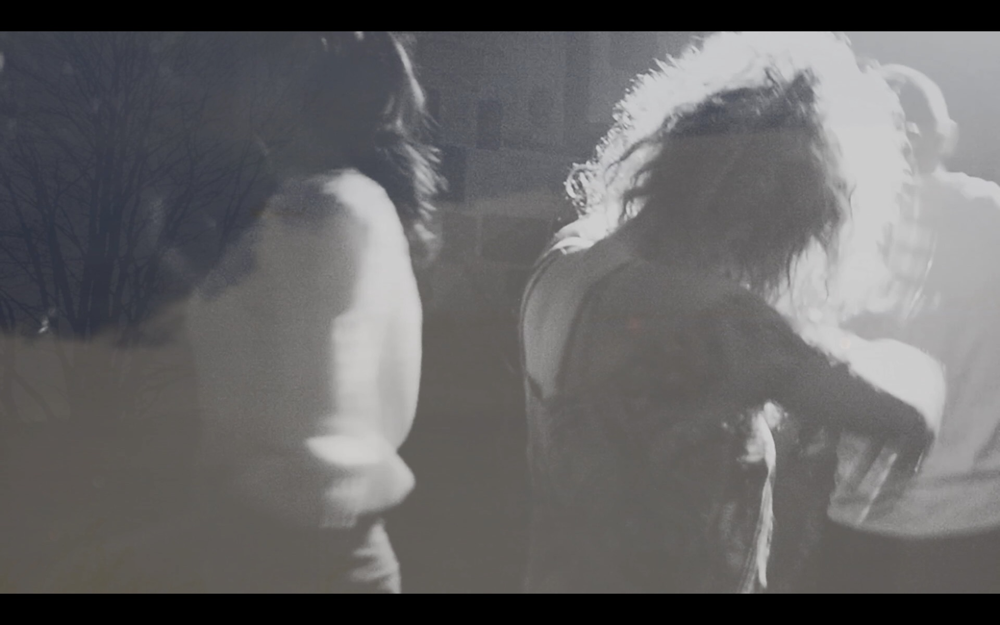
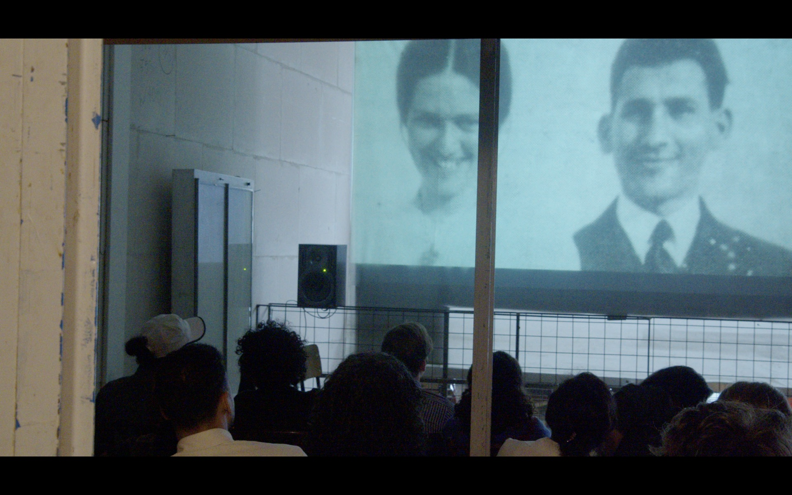
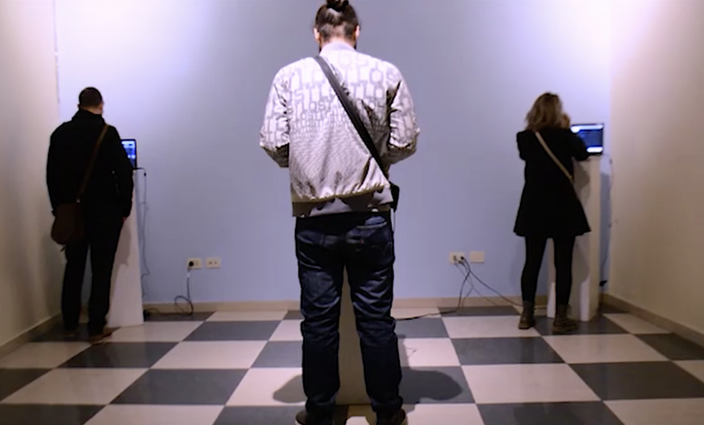
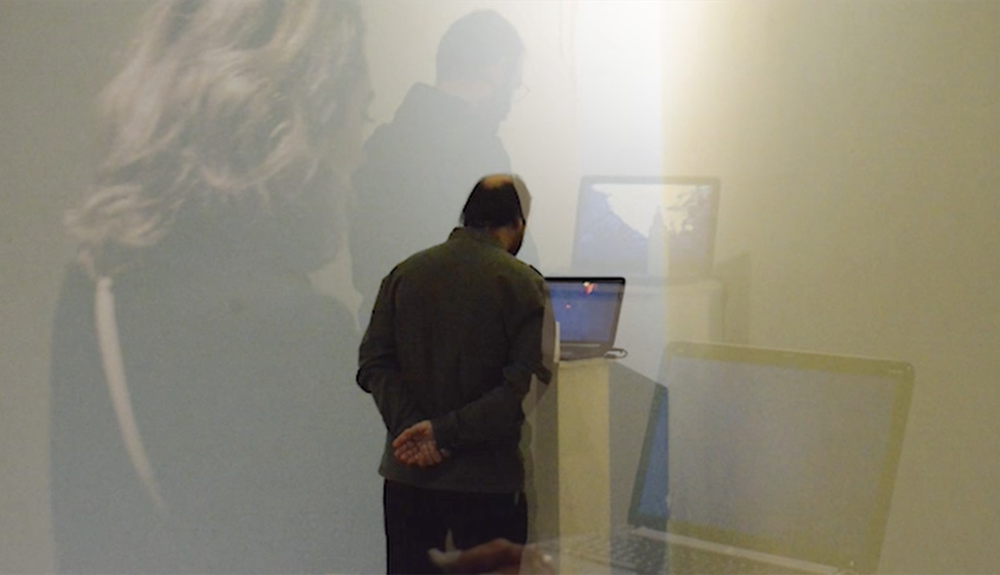
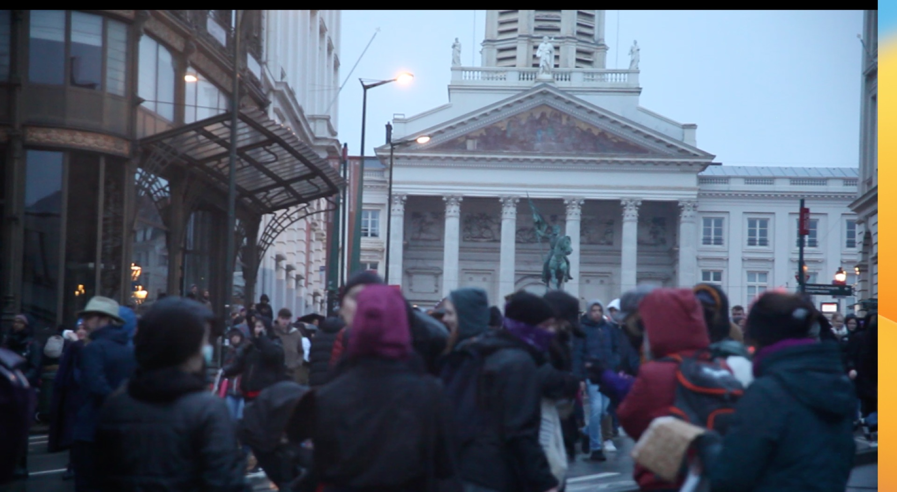

A mass movement All reaching for light.
Tawanen slows time in a world rushing forward — revealing quiet identities, hidden stories, and images that resist erasure.
Our Mission
We are a network at the intersection of audiovisual arts, cinema, culture, and politics.
Our Vision
An image that precedes ready-made narratives, restores balance to time, and returns depth and meaning to the human experience.
Our Pillars
Three interconnected practices rooted in craft, attention, and collective presence.

Tawānigraph
Production & Post-Production
Where body, movement, and material distill into image.
Learn more
Tawanoscope
Labs & Workshops
Exploratory spaces for attention, capture, and transformation.
Learn more
Tawān Film Club
Screening & Expansion
Screenings and conversations that expand cinema beyond the screen.
Learn moreFeatured Projects
Current initiatives shaping Brussels' experimental audiovisual landscape.
Join Us
Apply for programmes & events
Interested in our workshops, labs, film club, or festival programmes? Fill in the application form and we'll be in touch.
Apply nowIn Motion
Images from our workshops, screenings, and productions.






Watch